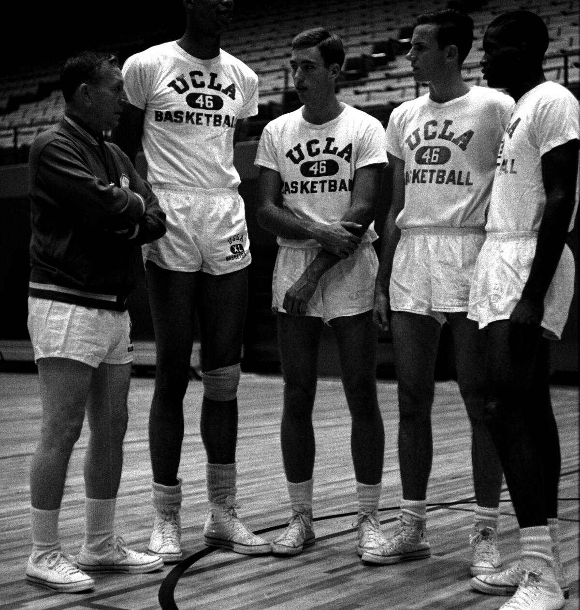
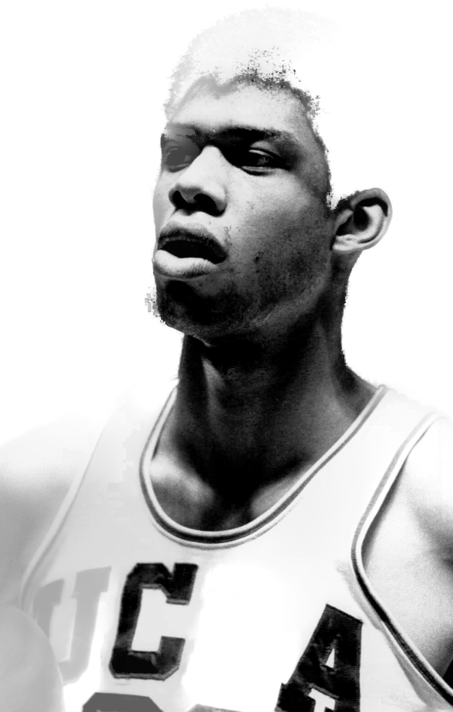

ANUARIO 1960 · ASSOCIATED STUDENTS UCLA · DOMINIO PÚBLICO

WOODEN Y CUATRO NOVATOS · 19/10/1965 · LOS ANGELES TIMES · CC BY 4.0
PRIMER AÑO · 1965
DÍA 1

LEW ALCINDOR · UCLA
hoy Kareem Abdul-Jabbar
C. 1966 · MALCOLM W. EMMONS · DOMINIO PÚBLICO
«
El primer día con Wooden, te explica cómo ponerte los calcetines.
KAREEM ABDUL-JABBAR VOA, 2017 · TRADUCCIÓN
FOTOS: ASSOCIATED STUDENTS UCLA Y MALCOLM W. EMMONS (DOMINIO PÚBLICO), LOS ANGELES TIMES (CC BY 4.0), VÍA WIKIMEDIA COMMONS CALCETÍN, RELOJ Y BANDERINES: RECREACIÓN